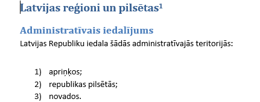
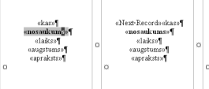

Portfolio
Šajā mācību gadā datorikas stundās esam apguvuši dažādas tēmas:
- Attēlu apstrāde
- Teksta apstrāde
- Izklājlapas
- Video
Attēlu apstrāde
Attēlu apstrādē nodarbojāmies ar rastrgrafiku un vektorgrafiku, kā arī 3D printēšanu.
RASTRGRAFIKA
Rastrgrafikas ietvaros strādāju ar aplikāciju Gimp, kurā iemācījos izveidot gif failu.
Viens no maniem darbiem:

-
VEKTORGRAFIKA
Vektorgrafikā grupās taisījām logo, plakātus un figūras ar lietotni Inkscape
Mans logo netika izvēlēts kā oficiālais, taču, veidojot to, iemācījos labāk izmanot Inkscape.
-
3D MODELĒŠANA
3D modelēšana man bija pilnībā jauna pieredze, tādēļ iemācījos daudz kā jauna, piemēram, izmantot vietni Tinkercad.

Izstrādāju video, kas apraksta darba uzdevumu un arī manas grupas sasniegumus.
Teksta apstrāde
Darbojoties ar teksta apstrādi, lelākoties izmantojām lietotni Word.
Word mācījos formatēt tekstu ar piedāvātajiem rīkiem, ātrāk un efektīvāk izmantot Word lietotni, kā arī ievietot attēlus un tabulas.

Izklājlapas
Excel
Izklājlapas un to funkcijas apguvām lietotnē Excel. Daudzās un dažādās formulas, ko Excel piedāvā, nebija viegli iemācīties izmantot, taču tās palīdz efektīvi un kompakti apstrādāt datus. Šīs zināšanas man pilnīgi noteikti noderēs tālāk nākotnē. Vai tas būtu aprēķināt ceļojuma izmaksas, vai izveidot dažādus grafikus.
Pāris bildes no stundu darba izpratnei:


Video
Video montēšana ir prasme, kas noder daudz dažādās situācijās. Iemācījos izmantot Clipchamp lietotni, lai apstrādātu video materiālus.
Treniņa nolūkos izveidoju šādu video:
Šo prasmi izmantoju, lai veidotu arī 3D printēšanas video, kā arī ikdienas dzīvē nepieciešamos brīžos.